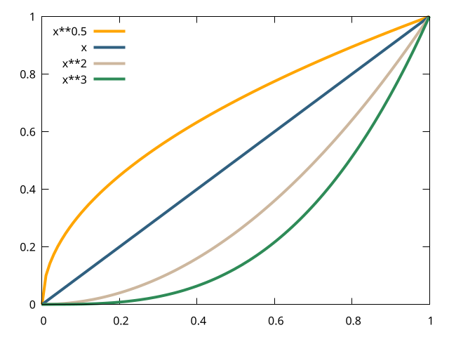
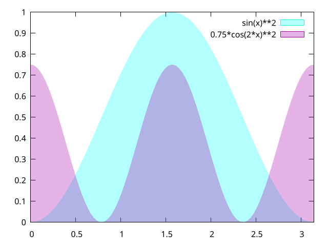
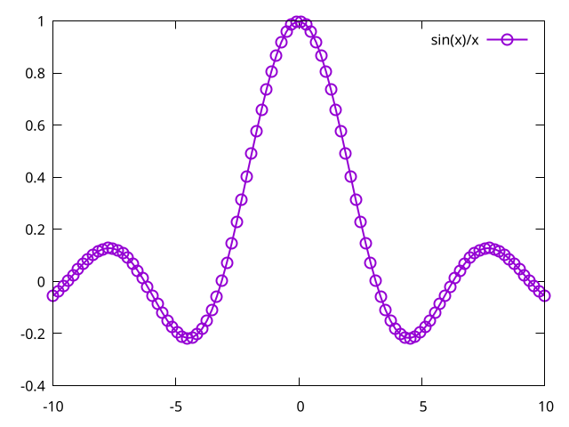
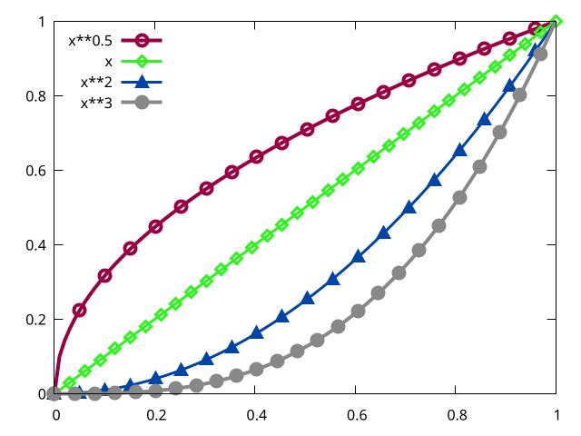
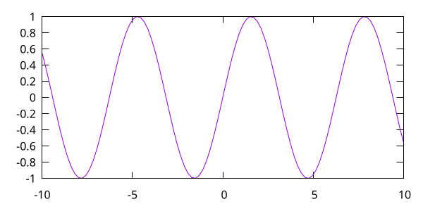
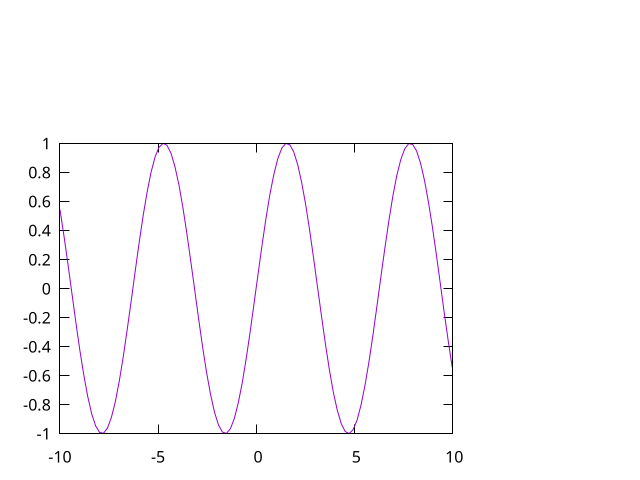
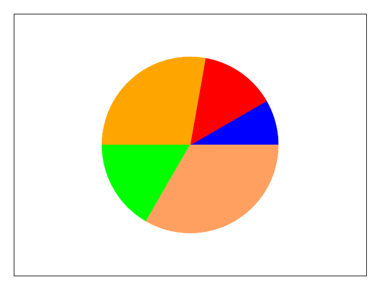

Gnuplot 绘图第三弹-颜色与样式
Table of Contents
前两弹已经介绍了使用 Gnuplot 绘制图像的一些基本操作，在第三弹中我们将看到如何对 图像进行美化。
1 设置曲线的颜色
# 设置全局的线宽，包括曲线、边框、刻度 set term pngcairo lw 4 # 将边框、刻度重新设置为 .25 set border lw .25 set key top left # 使用 =show colors= 查看更多颜色，注意十六进制的颜色也要单引号 plot [0:1] x**0.5 lc rgb 'orange', x lc rgb 'steelblue',\ x**2 lc rgb 'bisque', x**3 lc rgb '#2e8b57'

2 自定义曲线的样式
# png 后端不支持显示 dash ，注意此处切换至 pngcairo set term pngcairo set key top left set style line 1 dashtype 2 lw 4 lc rgb '#990042' set style line 2 dashtype 3 lw 3 lc rgb '#31f120' set style line 3 dashtype 4 lw 3 lc rgb '#0044a5' set style line 4 dashtype 5 lw 4 lc rgb '#888888' # 此时仍需手动指定曲线样式，要想自动指定，可设置 =set style increment userstyles= # 系统会自动在用户设置的样式中循环，=set style increment default= 恢复默认 plot [0:1] x**0.5 ls 1, x ls 2, x**2 ls 3, x**3 ls 4

3 透明的技术
set term pngcairo # pattern 一样可以设置透明度 =style fill transparency pattern n= 其中 n 是 # pattern 的序号，这里的透明指的是 pattern 中间的镂空部分可以看到后面 set style fill transparent solid 0.3 plot [0:pi] sin(x)**2 with filledcurves above y1=0 lc rgb '#00ffff',\ 0.75*cos(2*x)**2 with filledcurves above y1=0 lc rgb '#aa00aa'

4 带点的线
plot sin(x)/x with linespoints pointsize 2 pointtype 6 lw 2

5 定制点的样式
set key top left # 此行告诉 Gnuplot 我要设置的是 linespoints 的样式而不是 lines 的样式 set style function linespoints # 此处 pi 是指 pointinterval，指多少个采样点放置一个 Marker set style line 1 lw 4 lc rgb '#990042' ps 2 pt 6 pi 5 set style line 2 lw 3 lc rgb '#31f120' ps 2 pt 12 pi 3 set style line 3 lw 3 lc rgb '#0044a5' ps 2 pt 9 pi 5 set style line 4 lw 4 lc rgb '#888888' ps 2 pt 7 pi 4 plot [0:1] x**0.5 ls 1, x ls 2, x**2 ls 3, x**3 ls 4

6 改变图像的大小
# 此处的 size 对于 eps 等矢量图来说绝对尺寸并没有意义，只是表示长宽比，设为 6,3 # 也是一样的效果，但是对于 png 来说只能设置绝对尺寸 set term pngcairo size 600,300 set key off plot sin(x)

7 改变 Axes 的大小
set key off set size .75,.75 plot sin(x)

8 绘制对象
unset key unset tics set object 1 circle at graph .5,.5 size graph .25 fillcolor rgb 'blue'\ fillstyle solid arc [0:30] front set object 2 circle at graph .5,.5 size graph .25 fillcolor rgb 'red'\ fillstyle solid arc [30:80] front set object 3 circle at graph .5,.5 size graph .25 fillcolor rgb 'orange'\ fillstyle solid arc [80:180] front set object 4 circle at graph .5,.5 size graph .25 fillcolor rgb 'green'\ fillstyle solid arc [180:240] front set object 5 circle at graph .5,.5 size graph .25 fillcolor rgb 'sandybrown'\ fillstyle solid arc [240:360] front plot [0:1][0:1] -1
